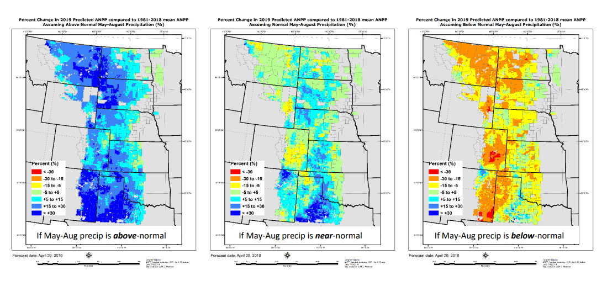

Grass-Cast: A New, Experimental Grassland Productivity Forecast for the Great Plains
Every spring, ranchers face the same difficult challengetrying to guess how much grass
will be available for livestock to graze during the upcoming summer. An innovative new
Grassland Productivity Forecast or Grass-Cast can help producers in the Great
Plains reduce this economically important source of uncertainty.
This new experimental grassland forecast is the result of a collaboration between
Colorado State University, U.S. Department of Agriculture (USDA), National Drought
Mitigation Center, and the University of Arizona. Funding for this project was provided
by the USDA Natural Resources Conservation Service (NRCS), USDA Agricultural
Research Service (ARS), and the National Drought Mitigation Center.
Grass-Cast uses almost 40 years of historical data on weather and vegetation growth
combined with seasonal precipitation forecaststo predict if rangelands in individual
grid cells (whose size is 10 km x 10km, or ~ 6 miles x 6 miles) are likely to produce
above-normal, near-normal, or below-normal amounts of vegetation.
As with any forecast, Grass-Casts accuracy depends on how far into the future we try to
look, according to ARS economist Dannele Peck, Director of the USDA Northern Plains
Climate Hub. Its accuracy improves with time as the growing season unfolds, so it should
be consulted more than just once during the growing season. Grass-Cast is updated every
two weeks to incorporate newly observed weather data and emerging trends in the
forecast, such as the flash drought in the western Dakotas and eastern Montana in 2017.
Grass-Cast also provides a view of rangeland productivity in the broader region, to assist
in larger-scale decision makingsuch as where grazing resources might be more
plentiful if a ranchers own region is at risk of drought.
Grass-Cast provides ranchers and land managers with an indication of productivity in the
upcoming growing season relative to their areas more nearly 40-year history. Ranchers
and land managers should use this information in combination with their local knowledge
of soils, plant communities, topography, and management to help with decision-making.
It should be noted that Grass-Cast cannot tell the difference between desirable forage
species and undesirable species. So it is important for producers to know what proportion
of a pasture is occupied by weeds, and how well those weeds respond to rain (or lack of
rain) compared to the desirable species. Producers should monitor these different
vegetation types to see if one is responding to the weather better than the other.
Furthermore, Grass-Cast does not directly account for local management practices, such
as grazing intensity in previous years. Producers should therefore adjust Grass-Casts
grid-level productivity estimates accordingly.
Producers should not rely on Grass-Cast as a sole source for making management
decisions. Similarly, public land managers should not use Grass-Cast as a sole source of
information for setting stocking rates, determining turnout dates, or other aspects of lease
agreements, allotments or permits.
Watch for updates on the Grass-Cast website or on Twitter (@PeckAgEc).
Project Contact: Dannele Peck, Director of the USDA Northern Plains Climate Hub, at
dannele.peck@ars.usda.gov or 970-744-9043.
Example
An example set of Grass-Cast maps, produced on April 29th for the summer of 2019, are
shown below. The left map shows, for each grid-cell (~6 miles x 6 miles in size), how
much vegetation is expected to grow (compared to the grid-cells 38-year average) if
precipitation in May-June-July-August (MJJA) is above-normal. A grid-cell in dark blue,
for example, is expected to have 30% more pounds per acre than its average. A grid-cell
in green is expected to have near-average (5% less or more) pounds per acre. The middle
map shows how much vegetation is expected to grow if MJJA precipitation is nearnormal.
A grid-cell in yellow, for example, is expected to have 5% to 15% less vegetation
than its average. The right map shows expected vegetation if MJJA precipitation is
below-normal. A grid-cell in red, for example, is expected to have 30% less vegetation
(or worse) than its average. For grid-cells in white or gray, no forecast is available due to
insufficient data or weak statistical relationships.

Example Grassland Productivity Forecast (Grass-Cast) maps for summer 2019, produced on April
29, 2019 (see Grass-Cast website for the most up-to-date maps). These three maps show the
forecasted percent change in grassland production compared to a grid-cells 38-year average. Left
map: percent change in pounds per acre if precipitation in May-June-July-August (MJJA) of 2019 is
above-normal. Middle map: percent change in production if MJJA precipitation is near-normal.
Right map: percent change in production if MJJA precipitation is below-normal. To see which map
(scenario) is more likely to occur in your area, please visit NOAA's long-range precipitation outlooks
at: https://www.cpc.ncep.noaa.gov/products/predictions/long_range/interactive/index.php.
For Example: In the maps above, much of the grid-cells in north-central Montana are medium-blue
(left map), green (middle map), and orange (right map). If May-Jun-Jul-Aug precipitation is abovenormal (left map),
those medium-blue grid-cells in north-central Montana rangelands are expected
to have 15 to 30% more pounds per acre of vegetation than their 38-year average. If MJJA
precipitation is near-normal (middle map), those green grid-cells in north-central Montana are
expected to have near-normal production, anywhere from 5% less to 5% more than their 38-year
average. If MJJA precipitation is below-normal (right map), those orange grid-cells in north-central
Montana are expected to have 15 to 30% less production than their 38-year average. For areas in
gray, Grass-Cast is not available due to insufficient data or weak statistical relationships.
Printable Version
Science Webinars
Great Plains
This webinar on the scientific methods underlying Grass-Cast was presented by Dannele Peck (Director, USDA Northern Plains Climate Hub) on April 2, 2019, for rangeland specialists with USDA NRCS in Kansas. Unlike previous webinars (provided below), it describes why Grass-Cast uses 3 maps instead of just 1.
It also explains how to interpret the 3 maps for a specific area of interest. Fast-forward to minute 44:15 for this explanation.
This webinar on the scientific methods underlying Grass-Cast was presented by Dannele Peck (Director, USDA Northern Plains Climate Hub) through the USDA Climate Hub 'brown bag' series on March 14, 2018.
This webinar about the science behind Grass-Cast was presented by Dr. William Parton (Professor and Senior Research Scientist, Natural Resources Ecology Lab, Colorado State University) for the North Central Climate Adaptation Science Center's ReVAMP Check-in Series, on June 26, 2018.
Southwest
Grass-Cast for the Southwest (Part 1): How to Interpret the 3 Grass-Cast Maps. Presented by Dr. Dannele Peck (Director, USDA Northern Plains Climate Hub) on May 14, 2019 for rangeland specialists in the Southwest region. Go to minute 4:53 for the motivation behind Grass-Cast. At 8:29 learn about the 4-step process for making Grass-Cast. Jump to 15:39 to understand why Grass-Cast shows 3 maps. At 18:20 learn how to interpret the 3 Grass-Cast maps for your location.
Grass-Cast for the Southwest (Part 2): Why Separate Forecasts for Spring & Summer? Presented by Dr. Melannie Hartman (Senior Research Associate, Colorado State University) on May 14, 2019 for rangeland specialists in the Southwest region.
Grass-Cast for the Southwest: Remote Sensings Role in the 4-Step Grass-Cast Process. Presented by Dr. William K. Smith (Assistant Professor, University of Arizona) on May 14, 2019 for rangeland specialists in the Southwest region.
Grass-Cast: How Its Made a detailed look at AZ and NM forecast procedures. Presented by Dr. Melannie Hartman (Senior Research Associate, Colorado State University) on Sept 3, 2020 for rangeland specialists in the Southwest region.
Acknowledgements
Development of the Grassland Productivity Forecast or "Grass-Cast" was funded in part by the:
USDA Agricultural
Research Service
USDA Natural Resources
Conservation Service
National Drought
Mitigation Center
.png)